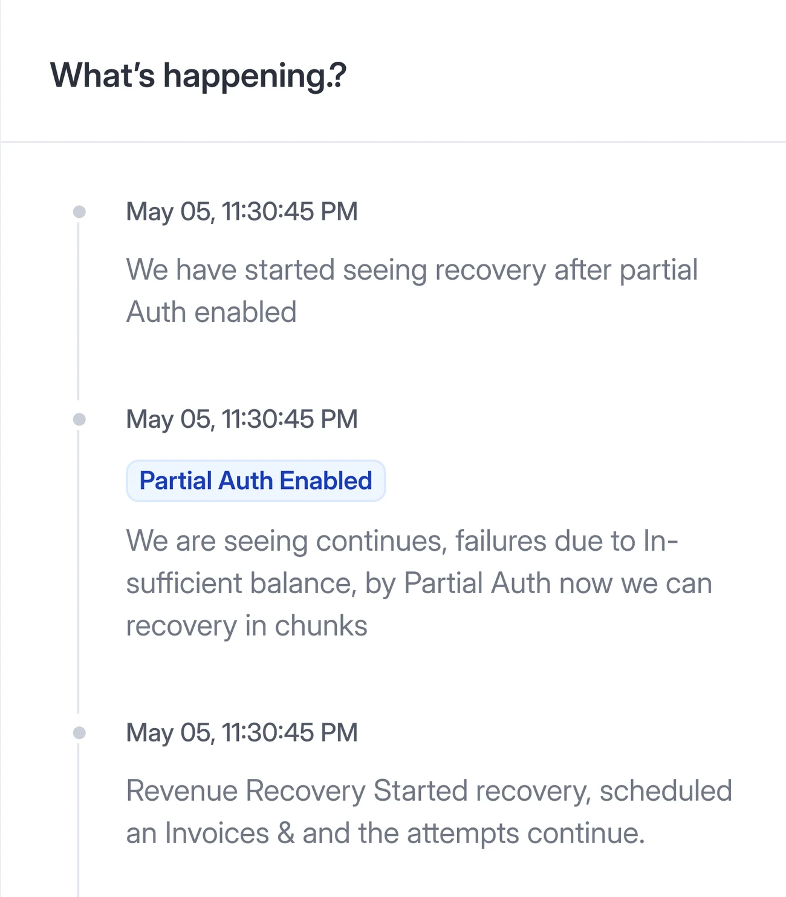
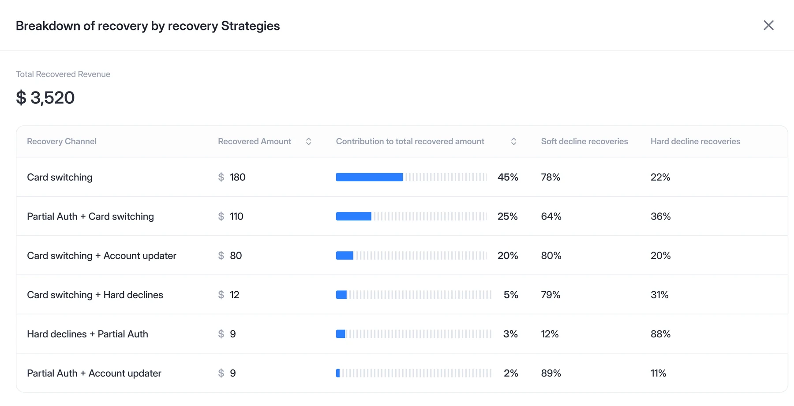

Revenue Recovery for subscription businesses
Subscription businesses lose revenue every time a renewal payment fails. Revenue Recovery takes over those failed invoices and decides, invoice by invoice, when to retry, which card to use and which strategy gives it the best chance.
- It explains itselfEvery retry decision is narrated in plain words, beside the attempts.
- Spend to recoverA monthly budget for hard declines, with the expected return up front.
- Strategies that stackCard switching, partial auth and account updater, combined per invoice.